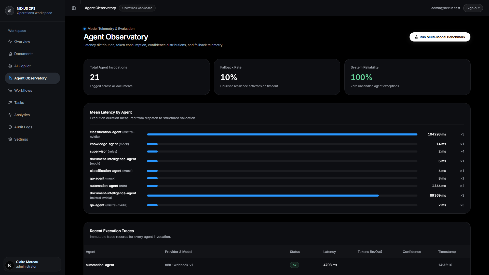

<template>
  <style>
    #root { position: absolute; inset: 0; background: #050505; }
    .frame { position: absolute; inset: 0; }
    .frame img {
      width: 1920px; height: 1080px;
      object-fit: cover; object-position: left top;
      transform-origin: 0 0; position: absolute; left: 0; top: 0;
    }
    #s4-chip { position: absolute; left: 60px; bottom: 60px; }
    .chip {
      background: rgba(8, 12, 18, 0.94);
      border: 1px solid #2a3441;
      border-left: 4px solid #22c55e;
      color: #ffffff;
      padding: 20px 30px;
      font-size: 36px; font-weight: 800;
    }
    .chip small { display: block; color: #86efac; font-size: 28px; font-weight: 600; margin-top: 6px; }
    #s4-card {
      position: absolute; inset: 0;
      display: flex; flex-direction: column; align-items: center; justify-content: center;
      background: #050505;
    }
    #s4-name { color: #ffffff; font-size: 108px; font-weight: 800; letter-spacing: 0.06em; }
    #s4-name .nx { color: #3b82f6; }
    #s4-line {
      color: #8b98a9; font-size: 42px; font-weight: 600; margin-top: 30px; letter-spacing: 0.01em;
    }
    #s4-line b { color: #ffffff; font-weight: 800; }
    #s4-credit { color: #8b98a9; font-size: 28px; font-weight: 500; margin-top: 42px; }
    #s4-bar { width: 0; height: 3px; background: #3b82f6; margin-top: 40px; box-shadow: 0 0 18px rgba(59,130,246,0.8); }
  </style>
  <div data-hf-id="hf-3735" id="root" data-composition-id="scene4">
    <!-- A: the receipts — agent observatory telemetry -->
    <div data-hf-id="hf-roqu" class="clip" id="s4-a" data-start="0" data-duration="2.16" data-track-index="0">
      <div data-hf-id="hf-d9wv" class="frame">
        
      </div>
      <div data-hf-id="hf-83en" id="s4-chip">
        <div data-hf-id="hf-7mf1" class="chip">On the record.<small data-hf-id="hf-lbgv">0 unhandled exceptions</small></div>
      </div>
    </div>
    <!-- B: end card -->
    <div data-hf-id="hf-h657" class="clip" id="s4-cardclip" data-start="2.19" data-duration="2.72" data-track-index="0">
      <div data-hf-id="hf-dm8r" id="s4-card">
        <div data-hf-id="hf-ivmb" id="s4-name">NEXUS <span data-hf-id="hf-fmb9" class="nx">OPS</span></div>
        <div data-hf-id="hf-6v7k" id="s4-bar"></div>
        <div data-hf-id="hf-okzr" id="s4-line"><b data-hf-id="hf-itnj">Approve once.</b> Everything after is automatic.</div>
        <div data-hf-id="hf-fkao" id="s4-credit">Real product · Music: Sascha Ende (CC BY 4.0)</div>
      </div>
    </div>
  </div>
  <script>
    const tl = gsap.timeline({ paused: true });
    tl.set("#root", { opacity: 1 }, 0);
    // A: observatory pan
    tl.fromTo("#root", { opacity: 0 }, { opacity: 1, duration: 0.2, ease: "power1.out" }, 0);
    tl.fromTo("#s4-shot", { scale: 1.14, x: -60, y: -40 }, { scale: 1.04, x: 0, y: 0, duration: 2.2, ease: "sine.out", transformOrigin: "0 0" }, 0);
    tl.fromTo("#s4-chip", { opacity: 0, y: 26 }, { opacity: 1, y: 0, duration: 0.35, ease: "power2.out" }, 0.12);
    // B: end card at +2.19 (abs 18.01, strong cue)
    tl.fromTo("#s4-cardclip", { opacity: 0 }, { opacity: 1, duration: 0.3, ease: "power1.out" }, 2.19);
    tl.fromTo("#s4-name", { opacity: 0, y: 24 }, { opacity: 1, y: 0, duration: 0.4, ease: "power2.out" }, 2.25);
    tl.to("#s4-bar", { width: 420, duration: 0.45, ease: "power3.out" }, 2.35);
    tl.fromTo("#s4-line", { opacity: 0, y: 18 }, { opacity: 1, y: 0, duration: 0.4, ease: "power2.out" }, 2.55);
    tl.fromTo("#s4-credit", { opacity: 0 }, { opacity: 0.9, duration: 0.3 }, 2.05);
    tl.to("#s4-card", { scale: 1.015, duration: 1.6, ease: "sine.inOut" }, 3.1);
    window.__timelines["scene4"] = tl;
  </script>
</template>
